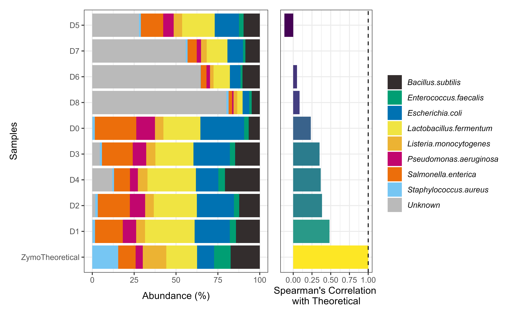

Every microbiome sequencing experiment must have a positive control. However, how do we make use of these mock controls to guide our quality check is not easily available. A basic question to asks, Is the composition in experimental mock standards similar to theoretical expected composition?
We can visually compare the composition bar-plots and check for correlation between experimental and theoretical community composition.chkMocks eases these basic comparisons.
Note: Currently, only ZymoBiomics mocks are supported and we are working on adding support for custom databases.
library(chkMocks)
library(dplyr)
#>
#> Attaching package: 'dplyr'
#> The following objects are masked from 'package:stats':
#>
#> filter, lag
#> The following objects are masked from 'package:base':
#>
#> intersect, setdiff, setequal, union
library(phyloseq)
library(patchwork)
#> Warning: package 'patchwork' was built under R version 4.0.5
library(ggplot2)
#> Warning: package 'ggplot2' was built under R version 4.0.5Before starting the analysis you need:
taxa_names as ASV seqsHere, the example data are from Karstens L, Asquith M, Davin S, Fair D, Gregory WT, Wolfe AJ, Braun J, McWeeney S. 2019. Controlling for contaminants in low-biomass 16S rRNA gene sequencing experiments. mSystems 4:e00290-19.
ZymoExamplePseq
#> phyloseq-class experiment-level object
#> otu_table() OTU Table: [ 946 taxa and 9 samples ]
#> sample_data() Sample Data: [ 9 samples by 6 sample variables ]
#> tax_table() Taxonomy Table: [ 946 taxa by 6 taxonomic ranks ]A single function, checkZymoBiomics will do the following:
Take an input phyloseq object of mock communities with taxa_names as ASV seqs and ZymoTrainingSet to assign taxonomy. The ZymoTrainingSet is a with only the full-lenght 16S rRNA gene sequences of the candidates in ZymoBIOMICS™ Microbial Community Standard. Catalog No. D6300. ASVs unrelated to ZymoTrainingSet are unclassified. The function will return two phyloseq objects a) ASVs level and b) Agglomerated at Species level. The agglomerated species level data is used to check for correlation with theoretical composition.
output.dat <- checkZymoBiomics(ZymoExamplePseq,
mock_db = ZymoTrainingSet,
multithread= 2,
threshold = 80,
verbose = FALSE)
#> Using internal reference database
#> for ZymoBiomics
#> Warning: Expected 8 pieces. Missing pieces filled with `NA` in 936 rows [9, 11,
#> 12, 13, 14, 15, 16, 17, 18, 19, 20, 21, 22, 23, 24, 25, 26, 27, 28, 29, ...].Get the agglomerated species level data.
ps_species <- output.dat$ps_species
ps_species
#> phyloseq-class experiment-level object
#> otu_table() OTU Table: [ 9 taxa and 10 samples ]
#> sample_data() Sample Data: [ 10 samples by 8 sample variables ]
#> tax_table() Taxonomy Table: [ 9 taxa by 15 taxonomic ranks ]Check assignments
get_taxa_unique(output.dat$ps_species, "Species")
#> [1] "Bacillus.subtilis" "Listeria.monocytogenes"
#> [3] "Staphylococcus.aureus" "Enterococcus.faecalis"
#> [5] "Lactobacillus.fermentum" "Escherichia.coli"
#> [7] "Salmonella.enterica" "Pseudomonas.aeruginosa"
#> [9] NAPlot composition
plotZymoDefault(output.dat)
#> Joining, by = "FeatureID"
#> Warning in class(x) <- c(setdiff(subclass, tibble_class), tibble_class): Setting
#> class(x) to multiple strings ("tbl_df", "tbl", ...); result will no longer be an
#> S4 object
#> Joining, by = "chk.names"
The above plot demonstrates how well/bad the experimental mocks behaved compared to theoretical composition.
The data from Karstens L, et al., 2019. mSystems started from cells->DNA extraction->pcr amplification->sequencing. At every step there is a possibility for bias. This is demonstrated with undiluted mock sample showing low correlation. Additionally, diluted samples have several unknown, potential contaminants common to low-biomass samples.
devtools::session_info()
#> - Session info ---------------------------------------------------------------
#> setting value
#> version R version 4.0.3 (2020-10-10)
#> os Windows 10 x64
#> system x86_64, mingw32
#> ui RTerm
#> language (EN)
#> collate English_Netherlands.1252
#> ctype English_Netherlands.1252
#> tz Europe/Berlin
#> date 2021-04-29
#>
#> - Packages -------------------------------------------------------------------
#> ! package * version date lib source
#> ade4 1.7-16 2020-10-28 [2] CRAN (R 4.0.5)
#> ape 5.4-1 2020-08-13 [2] CRAN (R 4.0.2)
#> Biobase 2.50.0 2020-10-27 [2] Bioconductor
#> BiocGenerics 0.36.1 2021-04-16 [2] Bioconductor
#> BiocParallel 1.24.1 2020-11-06 [2] Bioconductor
#> biomformat 1.18.0 2020-10-27 [2] Bioconductor
#> Biostrings 2.58.0 2020-10-27 [2] Bioconductor
#> bit 4.0.4 2020-08-04 [2] CRAN (R 4.0.2)
#> bit64 4.0.5 2020-08-30 [2] CRAN (R 4.0.2)
#> bitops 1.0-6 2013-08-17 [2] CRAN (R 4.0.0)
#> blob 1.2.1 2020-01-20 [2] CRAN (R 4.0.2)
#> bslib 0.2.4 2021-01-25 [2] CRAN (R 4.0.3)
#> cachem 1.0.4 2021-02-13 [2] CRAN (R 4.0.5)
#> callr 3.7.0 2021-04-20 [2] CRAN (R 4.0.5)
#> chkMocks * 0.1.0 2021-04-29 [2] local
#> cli 2.4.0 2021-04-05 [2] CRAN (R 4.0.5)
#> cluster 2.1.0 2019-06-19 [3] CRAN (R 4.0.3)
#> codetools 0.2-16 2018-12-24 [3] CRAN (R 4.0.3)
#> colorspace 1.4-1 2019-03-18 [2] CRAN (R 4.0.2)
#> corrr 0.4.3 2020-11-24 [2] CRAN (R 4.0.3)
#> crayon 1.4.1 2021-02-08 [2] CRAN (R 4.0.5)
#> dada2 1.18.0 2020-10-27 [2] Bioconductor
#> data.table 1.13.0 2020-07-24 [2] CRAN (R 4.0.2)
#> DBI 1.1.1 2021-01-15 [2] CRAN (R 4.0.5)
#> DECIPHER 2.18.1 2020-10-29 [2] Bioconductor
#> DelayedArray 0.16.3 2021-03-24 [2] Bioconductor
#> desc 1.3.0 2021-03-05 [2] CRAN (R 4.0.5)
#> devtools 2.4.0 2021-04-07 [2] CRAN (R 4.0.5)
#> digest 0.6.27 2020-10-24 [2] CRAN (R 4.0.3)
#> dplyr * 1.0.2 2020-08-18 [2] CRAN (R 4.0.2)
#> ellipsis 0.3.1 2020-05-15 [2] CRAN (R 4.0.2)
#> evaluate 0.14 2019-05-28 [2] CRAN (R 4.0.2)
#> fansi 0.4.2 2021-01-15 [2] CRAN (R 4.0.5)
#> farver 2.1.0 2021-02-28 [2] CRAN (R 4.0.5)
#> fastmap 1.0.1 2019-10-08 [2] CRAN (R 4.0.2)
#> foreach 1.5.1 2020-10-15 [2] CRAN (R 4.0.3)
#> fs 1.5.0 2020-07-31 [2] CRAN (R 4.0.2)
#> generics 0.1.0 2020-10-31 [2] CRAN (R 4.0.3)
#> GenomeInfoDb 1.26.7 2021-04-09 [2] Bioconductor
#> GenomeInfoDbData 1.2.4 2020-10-19 [2] Bioconductor
#> GenomicAlignments 1.26.0 2020-10-27 [2] Bioconductor
#> GenomicRanges 1.42.0 2020-10-27 [2] Bioconductor
#> ggplot2 * 3.3.3 2020-12-30 [2] CRAN (R 4.0.5)
#> glue 1.4.2 2020-08-27 [2] CRAN (R 4.0.2)
#> gtable 0.3.0 2019-03-25 [2] CRAN (R 4.0.2)
#> highr 0.9 2021-04-16 [2] CRAN (R 4.0.5)
#> hms 1.0.0 2021-01-13 [2] CRAN (R 4.0.5)
#> htmltools 0.5.1.1 2021-01-22 [2] CRAN (R 4.0.3)
#> hwriter 1.3.2 2014-09-10 [2] CRAN (R 4.0.0)
#> igraph 1.2.6 2020-10-06 [2] CRAN (R 4.0.3)
#> IRanges 2.24.1 2020-12-12 [2] Bioconductor
#> iterators 1.0.13 2020-10-15 [2] CRAN (R 4.0.3)
#> jpeg 0.1-8.1 2019-10-24 [2] CRAN (R 4.0.0)
#> jquerylib 0.1.3 2020-12-17 [2] CRAN (R 4.0.3)
#> jsonlite 1.7.1 2020-09-07 [2] CRAN (R 4.0.2)
#> knitr 1.32 2021-04-14 [2] CRAN (R 4.0.5)
#> labeling 0.4.2 2020-10-20 [2] CRAN (R 4.0.3)
#> lattice 0.20-41 2020-04-02 [3] CRAN (R 4.0.3)
#> latticeExtra 0.6-29 2019-12-19 [2] CRAN (R 4.0.2)
#> lifecycle 1.0.0 2021-02-15 [2] CRAN (R 4.0.5)
#> magrittr 2.0.1 2020-11-17 [2] CRAN (R 4.0.5)
#> MASS 7.3-53 2020-09-09 [3] CRAN (R 4.0.3)
#> Matrix 1.2-18 2019-11-27 [3] CRAN (R 4.0.3)
#> MatrixGenerics 1.2.1 2021-01-30 [2] Bioconductor
#> matrixStats 0.58.0 2021-01-29 [2] CRAN (R 4.0.5)
#> memoise 2.0.0 2021-01-26 [2] CRAN (R 4.0.5)
#> mgcv 1.8-33 2020-08-27 [3] CRAN (R 4.0.3)
#> microbiome 1.12.0 2020-10-27 [2] Bioconductor
#> multtest 2.46.0 2020-10-27 [2] Bioconductor
#> munsell 0.5.0 2018-06-12 [2] CRAN (R 4.0.2)
#> nlme 3.1-149 2020-08-23 [3] CRAN (R 4.0.3)
#> patchwork * 1.1.1 2020-12-17 [2] CRAN (R 4.0.5)
#> permute 0.9-5 2019-03-12 [2] CRAN (R 4.0.2)
#> phyloseq * 1.34.0 2020-10-27 [2] Bioconductor
#> pillar 1.6.0 2021-04-13 [2] CRAN (R 4.0.5)
#> pkgbuild 1.2.0 2020-12-15 [2] CRAN (R 4.0.5)
#> pkgconfig 2.0.3 2019-09-22 [2] CRAN (R 4.0.2)
#> pkgdown 1.6.1 2020-09-12 [2] CRAN (R 4.0.2)
#> pkgload 1.2.1 2021-04-06 [2] CRAN (R 4.0.5)
#> plyr 1.8.6 2020-03-03 [2] CRAN (R 4.0.2)
#> png 0.1-7 2013-12-03 [2] CRAN (R 4.0.0)
#> prettyunits 1.1.1 2020-01-24 [2] CRAN (R 4.0.2)
#> processx 3.5.1 2021-04-04 [2] CRAN (R 4.0.5)
#> progress 1.2.2 2019-05-16 [2] CRAN (R 4.0.2)
#> ps 1.6.0 2021-02-28 [2] CRAN (R 4.0.5)
#> purrr 0.3.4 2020-04-17 [2] CRAN (R 4.0.2)
#> R6 2.5.0 2020-10-28 [2] CRAN (R 4.0.3)
#> ragg 1.1.2 2021-03-17 [2] CRAN (R 4.0.5)
#> RColorBrewer 1.1-2 2014-12-07 [2] CRAN (R 4.0.0)
#> Rcpp 1.0.5 2020-07-06 [2] CRAN (R 4.0.2)
#> D RcppParallel 5.1.2 2021-04-15 [2] CRAN (R 4.0.5)
#> RCurl 1.98-1.3 2021-03-16 [2] CRAN (R 4.0.4)
#> remotes 2.3.0 2021-04-01 [2] CRAN (R 4.0.5)
#> reshape2 1.4.4 2020-04-09 [2] CRAN (R 4.0.2)
#> rhdf5 2.34.0 2020-10-27 [2] Bioconductor
#> D rhdf5filters 1.2.0 2020-10-27 [2] Bioconductor
#> Rhdf5lib 1.12.1 2021-01-26 [2] Bioconductor
#> rlang 0.4.10 2020-12-30 [2] CRAN (R 4.0.5)
#> rmarkdown 2.7 2021-02-19 [2] CRAN (R 4.0.5)
#> rprojroot 2.0.2 2020-11-15 [2] CRAN (R 4.0.5)
#> Rsamtools 2.6.0 2020-10-27 [2] Bioconductor
#> RSQLite 2.2.1 2020-09-30 [2] CRAN (R 4.0.3)
#> Rtsne 0.15 2018-11-10 [2] CRAN (R 4.0.2)
#> S4Vectors 0.28.1 2020-12-09 [2] Bioconductor
#> sass 0.3.1 2021-01-24 [2] CRAN (R 4.0.3)
#> scales 1.1.1 2020-05-11 [2] CRAN (R 4.0.2)
#> sessioninfo 1.1.1 2018-11-05 [2] CRAN (R 4.0.2)
#> ShortRead 1.48.0 2020-10-28 [2] Bioconductor
#> stringi 1.5.3 2020-09-09 [2] CRAN (R 4.0.2)
#> stringr 1.4.0 2019-02-10 [2] CRAN (R 4.0.2)
#> SummarizedExperiment 1.20.0 2020-10-28 [2] Bioconductor
#> survival 3.2-7 2020-09-28 [3] CRAN (R 4.0.3)
#> systemfonts 1.0.1 2021-02-09 [2] CRAN (R 4.0.5)
#> testthat 3.0.2 2021-02-14 [2] CRAN (R 4.0.5)
#> textshaping 0.3.3 2021-03-16 [2] CRAN (R 4.0.5)
#> tibble 3.0.4 2020-10-12 [2] CRAN (R 4.0.3)
#> tidyr 1.1.2 2020-08-27 [2] CRAN (R 4.0.2)
#> tidyselect 1.1.0 2020-05-11 [2] CRAN (R 4.0.2)
#> usethis 2.0.1 2021-02-10 [2] CRAN (R 4.0.5)
#> utf8 1.2.1 2021-03-12 [2] CRAN (R 4.0.5)
#> vctrs 0.3.4 2020-08-29 [2] CRAN (R 4.0.2)
#> vegan 2.5-7 2020-11-28 [2] CRAN (R 4.0.5)
#> viridisLite 0.4.0 2021-04-13 [2] CRAN (R 4.0.5)
#> withr 2.4.2 2021-04-18 [2] CRAN (R 4.0.5)
#> xfun 0.22 2021-03-11 [2] CRAN (R 4.0.5)
#> XVector 0.30.0 2020-10-28 [2] Bioconductor
#> yaml 2.2.1 2020-02-01 [2] CRAN (R 4.0.2)
#> zlibbioc 1.36.0 2020-10-28 [2] Bioconductor
#>
#> [1] C:/Users/sudar/AppData/Local/Temp/RtmpwpIp5Q/temp_libpath18d8491b328a
#> [2] C:/Users/sudar/Documents/R/win-library/4.0
#> [3] C:/Program Files/R/R-4.0.3/library
#>
#> D -- DLL MD5 mismatch, broken installation.